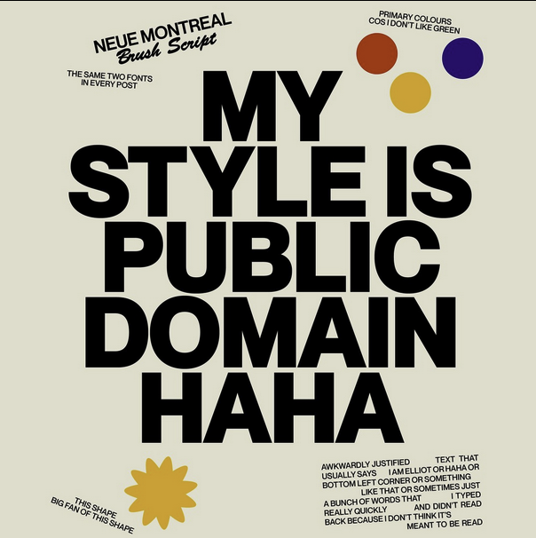

Elliot Ulm: a graphic design case study
Elliot is an instagramer and youtuber popular for his graphic design. This is a case study into how he uses some of the basic concepts of design.
Principles of Type and Photography
All typefaces have a personality of their own! What are the qualities that influence the peresonality of a typeface? Photos have more to their composition than you'd think! What gives a photo intrigue?
Ad Campaign Reverse Engineer: What Makes an Ad?
We see ads everywhere, all over, all day, every day. What makes an ad? What makes an ad professional? Why are ads important to a company? Dissect the parts of an ad and reverse engineer it with me!